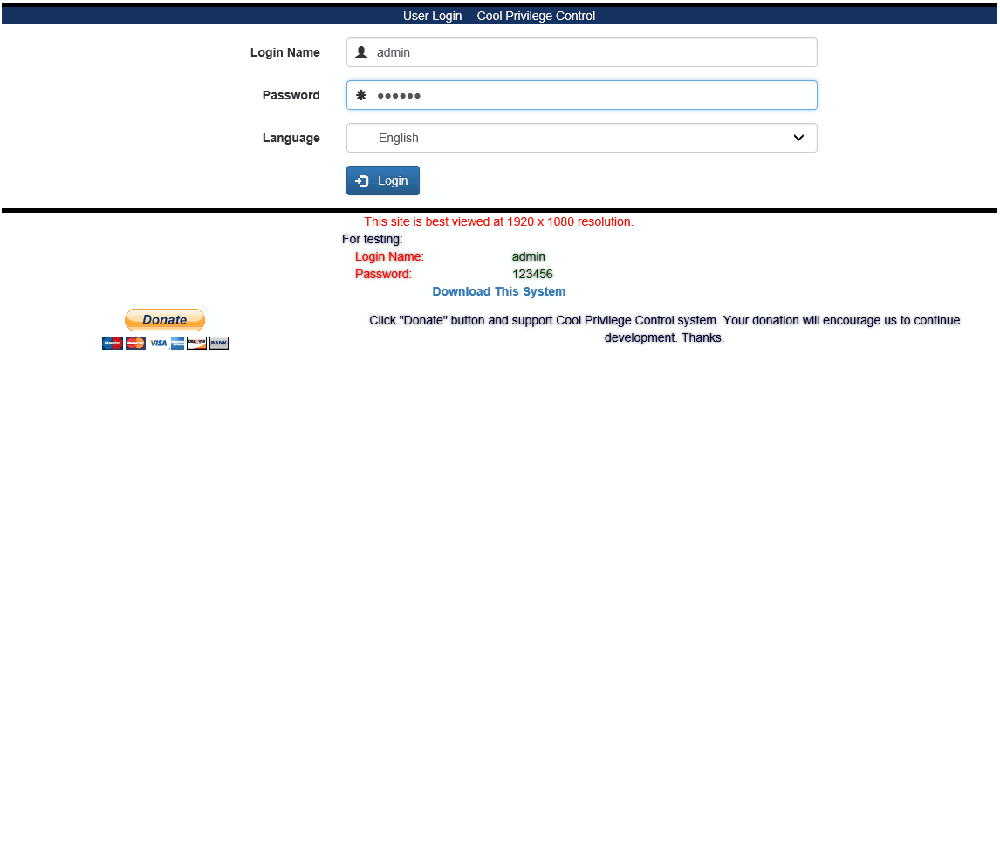

- Cool Privilege Control System Part 1 -- asp.net MVC
- Cool Privilege Control System Part 2 -- asp.net MVC with WCF
- Cool Privilege Control System Part 3 -- Angular Single-Page Application
Title: Cool Privilege Control System Part 3 -- Angular Single-Page Application
Author: wells cheung
Email: wells-z@hotmail.com
Language: C#
Platform: Window
Technology: Angular, Entity Framework, MVC, asp.net, jQuery, MEF, log4net, automapper, WCF and so on
Level: Intermediate
Description: Cool Privilege Control System Part 3 -- Angular Single-Page Application
Section Introduction
SubSection Introduction
License: MS-PL
Introduction
As previous posts, I have introduced Cool Privilege Control is a single sign-on project. It supports multi types UI layer based on WCF restful service. In previous post, I had implemented the UI layer by asp.net MVC. In this post, I will present how to use angularjs to implement Cool Privilege Control as UI layer. If you want to review my last post, please see my last artical. Besides, I want to take some times to thank who voted 5 and asked questions.
Background
In order to increase learning interest and distinguish previous posts. I am more interested in designing Single Page Applications. In order to complete this task, I used Angular to implement UI layer, since Angular support plenty of functions, it provides not only two-ways binding but also pages routing. There is not doubt that you can use jQuery, Knockout or other javascript instead. About server side services, I used WCF restful methods to perform the purpose.
Look and Feel

Design Pattern
First of all, I want to describe how to invoke WCF restful method from client side script.
Call Single Parameter WCF Service
[OperationContract]
//Customized attribute for logging and initialization
[CoolWCFBehavior]
[WebInvoke(Method = "POST", RequestFormat = WebMessageFormat.Json, ResponseFormat = WebMessageFormat.Json)]
SystemInfoVM GetSystemInfo(WCFAuthInfoVM entity_WCFAuthInfoVM);
In previous code snip, I applied WebInvoke or WebGet attribute to the service so that the method can be consumed by client side with ajax get or post methods. For details, please visit msdn link(https://msdn.microsoft.com/en-us/library/bb412172(v=vs.100).aspx).
public string GetMultiLingualResSer(string str_LangKey)
{
LanguageKey languageKey_Input = LanguageKey.en;
Enum.TryParse(str_LangKey, out languageKey_Input);
IDictionary dic_AllKey = LangPack.GetAllByLangKey(LangPack.GetLanugage(languageKey_Input));
JavaScriptSerializer jsonSerializer = new JavaScriptSerializer();
return jsonSerializer.Serialize(dic_AllKey);
}
In above code snip, I completed the concrete content of the interface. This function will return all language resources as JSON string.
///<reference path="../Scripts/angular.js" />
///<reference path="../Scripts/angular-route.js" />
(function () {
'use strict';
var injectParams = ['$http'];
var SystemInfoRestfulSer = function ($http) {
this.GetMultiLingualResSer = function (str_LangKey) {
var request = $http({
method: 'GET',
headers: {
'Content-Type': 'application/json; charset=utf-8'
},
url: WCFPath + 'SystemMgtService.svc/GetMultiLingualResSer/' + (str_LangKey != "" ? str_LangKey : "en"),
data: {}
});
return request;
};
//.........
//.........
SystemInfoRestfulSer.$inject = injectParams;
angular.module('WCFClient').service('SystemInfoRestfulSer', SystemInfoRestfulSer);
})();
Previous angular service was created to call WCF service and receive asyn promise. About $http method, please refer angular api https://docs.angularjs.org/api/ng/service/$http
Following code snip demonstrates how to call the method of angular service. Meanwhile, I used ui-route to present nested views feature on single page application.
$stateProvider.state('CPCS', {
url: '/',
resolve: {
Setup: ['$q', '$state', '$location', '$cookies', 'StaticContentModel', 'SystemInfoVM', 'WCFAuthInfoVM', 'SystemInfoRestfulSer', '$sessionStorage', function ($q, $state, $location, $cookies, StaticContentModel, SystemInfoVM, WCFAuthInfoVM, SystemInfoRestfulSer, $sessionStorage) {
var promise_Global = $q.defer();
//Get Languar Pack
var promise_GetLanguagePack = new function () {
var deferred_GetLanguagePack = $q.defer();
SystemInfoRestfulSer.GetMultiLingualResSer(defaultLangKey).then(function (response) {
var multiLignualRes = angular.fromJson(response.data);
if (multiLignualRes != null && multiLignualRes != undefined) {
$sessionStorage.MultiLingualRes = multiLignualRes;
$sessionStorage.SelectedLang = defaultLangKey;
}
deferred_GetLanguagePack.resolve();
});
return deferred_GetLanguagePack.promise;
};
//Get System Info
var promise_GetSysInfo = new function () {
//......
};
//Wait serice response and navigate to login page
$q.all([promise_GetLanguagePack, promise_GetSysInfo]).then(function () {
promise_Global.resolve();
$state.go('LoginModule.Login');
});
}]
},
controller: 'GlobalController'
})
Call Multi Parameter WCF Service
[OperationContract]
//Customized attribute for logging and initialization
[CoolWCFBehavior]
[WebInvoke(Method = "POST", BodyStyle = WebMessageBodyStyle.WrappedRequest, RequestFormat = WebMessageFormat.Json, ResponseFormat = WebMessageFormat.Json, UriTemplate = "login")]
LUSerLoginResult Login(LoginUserVM entityInst, string str_Language, string str_IpAdd, string str_HostName);
In previous code snip, I add attribute "BodyStyle = WebMessageBodyStyle.WrappedRequest" to wrap the request. Request and response will be:
Request:
{"entityInst":{ID:"",LoginName:"",LoginPwd:"",...},"str_Language":"","str_IpAdd":"","str_HostName":""}
Response:
{"Str_ServerToken":"XXXXXXXXXXX","IsPWDExpire":false,"Entity_SessionWUserInfo":{LoginName:"","Status":1,"UserType":1,....}}
Following code snip demonstrates the angular service and the caller.
Angular Service(Login):
this.Login = function (LoginUserJson) {
var request = $http({
method: 'POST',
headers: {
'Content-Type': 'application/json; charset=utf-8'
},
url: WCFPath + 'LoginUserMgtService.svc/login',
data: LoginUserJson
});
return request;
};
Caller:
//Login Method
$scope.DoLogin = function () {
$scope.IsEnable_DoLogin = false;
var model = {
'entityInst': $scope.LoginUserModel,
'str_Language': $scope.LangPacks.SelectedKey.Key,
'str_IpAdd': "",
'str_HostName': ""
};
var loginRequest = LoginUserMgtSer.Login(model);
loginRequest.then(function (response) {
var loginResult = new LUSerLoginResult(response.data);
//Success
if (!loginResult.HasError()) {
var SessionInfo = {
'WCFToken': loginResult.Str_ServerToken,
'UserId': loginResult.Entity_SessionWUserInfo.ID
};
var clientSession = new ClientSessionMgt();
var request_SetUserInfo = clientSession.SetUserInfo(SessionInfo);
if (loginResult.PwdExpire()) {
//Reset Password
$state.go("LoginModule.Reset");
}
else {
//Navigate to Index Page
$state.go('Main.Home.IndexPart1');
}
$scope.IsEnable_DoLogin = true;
}
//Error
else {
$scope.IsEnable_DoLogin = true;
throw new ExcetionInst(ExceptionType.ValidationError, $location.path(), $sessionStorage.MultiLingualRes.LoginScreenTitle, loginResult.GetErrMsgs());
}
});
};
Second, Use AngularJS MVC design pattern to design the project.

As previous diagram described, A user visit the site, Controller select suitable View to perform the request and invoke the method of Angular Service or Factory in order to get data, on the other hand, Angular Service or Factory call WCF restful service via $http request. Angular Service or Factory response json to the caller. Controller construct the Model and use two-ways binding to connect Model with the view.
Take Function Type Management as an example. Function Type Management contains three views.
- List Function Type (FTManage.tpl.html)
- Edit Function Type (FTManage.Edit.tpl.html)
- Create Function Type (FTManage.Create.tpl.html)
- /FTManage
- /FTManage/Edit
- /FTManage/Create

Function Type Management contains "Create / Delete / Edit / Search / Paging / Sort" methods.

Following diagram illustrate Function Type Client Service

Below code show details of the services.
.....
this.Create = function (json_Data) {
var request = $http({
method: 'POST',
headers: {
'Content-Type': 'application/json; charset=utf-8'
},
url: WCFPath + 'FunTypeMgtService.svc/Create',
data: json_Data
});
return request;
};
this.Delete = function (json_Data) {
var request = $http({
method: 'POST',
headers: {
'Content-Type': 'application/json; charset=utf-8'
},
url: WCFPath + 'FunTypeMgtService.svc/Delete',
data: json_Data
});
return request;
};
this.Update = function (json_Data) {
var request = $http({
method: 'POST',
headers: {
'Content-Type': 'application/json; charset=utf-8'
},
url: WCFPath + 'FunTypeMgtService.svc/Update',
data: json_Data
});
return request;
};
.....
Settings
I list my development environment for your reference.
- AngularJS v1.5.0
- Microsoft Visual Studio 2013
- .NET Framework 4.5.1
- MYSQL 5.6.26
- Entity Framework 6.0
4.1 EDIT WEB.CONFIG FILE
4.1.1 For MYSQL user
Figure 4.1.1.1 Hosting Service web.config(MySql with WCF Version)
.jpg)
Finally
About the source code of cool privilege control written in angular, I will upload it to GIT after I completed the MSSQL version and total testing.
I place Donate button in the site and project. If you like Cool Privilege Control. I hope you can donate the project. Your donation will encourage us to continue development and keep the testing site serve. Thanks.
Besides, Cool Privilege Control based on many interesting design pattern. Such as angular, MEF, Entity Framework, jQuery and Bootstrap(UI). I am sorry I cannot introduce all of these design patterns to you in short time. Thanks for your reading.
History
2016-03-28 Initial publication